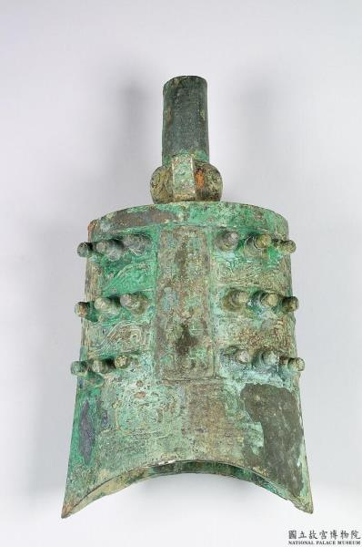

9015《3月表藝工作坊》 March 25, 2024 《3月表藝工作坊》 宋真宗 禪地玉冊 https://npm.elearn.hrd.gov.tw/base/10060/door/public/posts/275/ 亞醜方尊 https://npm.elearn.hrd.gov.tw/base/10060/door/public/posts/956/ 春秋中期 子犯龢鐘  https://npm.elearn.hrd.gov.tw/base/10060/door/public/posts/324/ 玉勾雲形佩 https://npm.elearn.hrd.gov.tw/base/10060/door/public/posts/314/